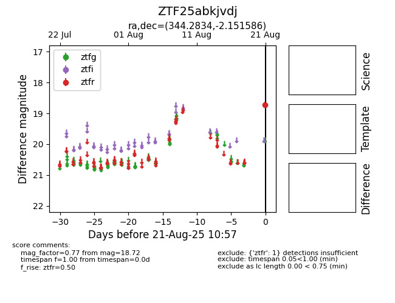

Target ZTF25abkjvdj at 2025-08-21 10:57, see:
FINK: fink-portal.org/ZTF25abkjvdj
Lasair: lasair-ztf.lsst.ac.uk/objects/ZTF25abkjvdj
ALeRCE: alerce.online/object/ZTF25abkjvdj
alt names
ZTF25abkjvdj (ztf,alerce)
coordinates:
equatorial (ra, dec) = (344.2834,-2.15159)
galactic (l, b) = (70.4295,-52.95286)
photometry
last ztfr=18.72
1 ztfr detections
